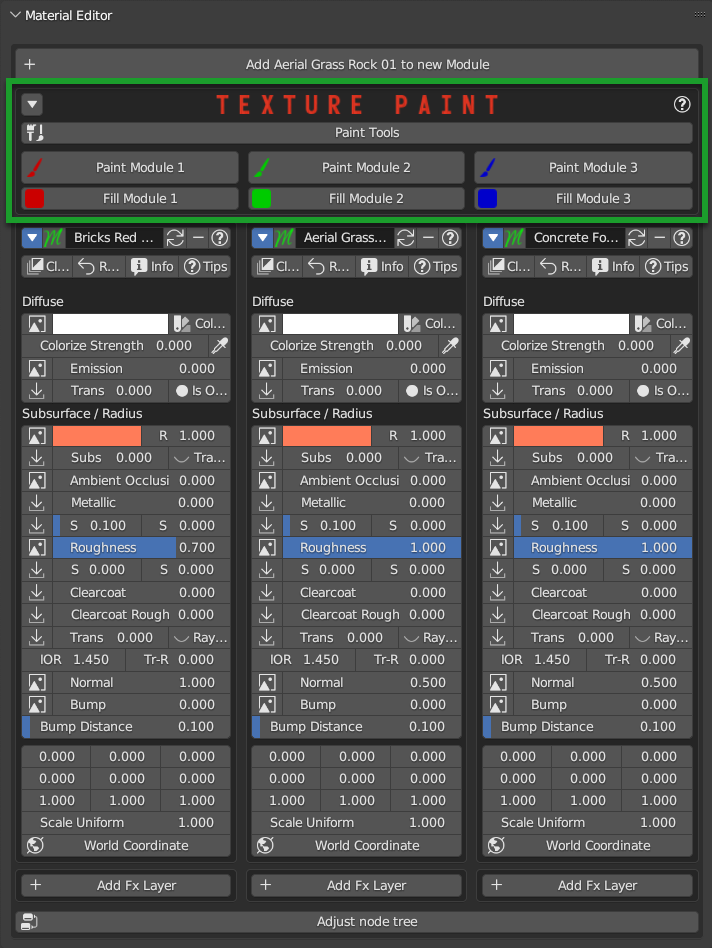
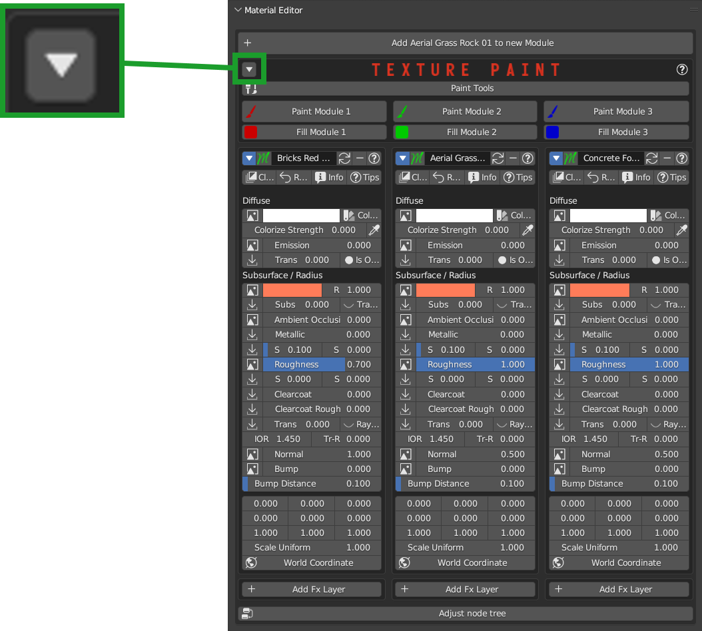
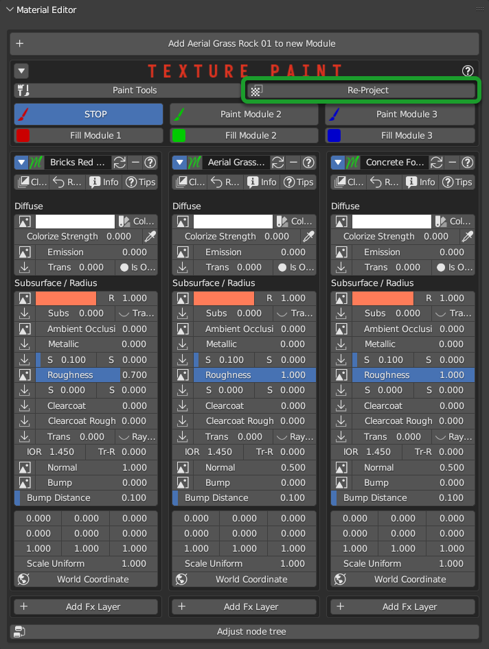
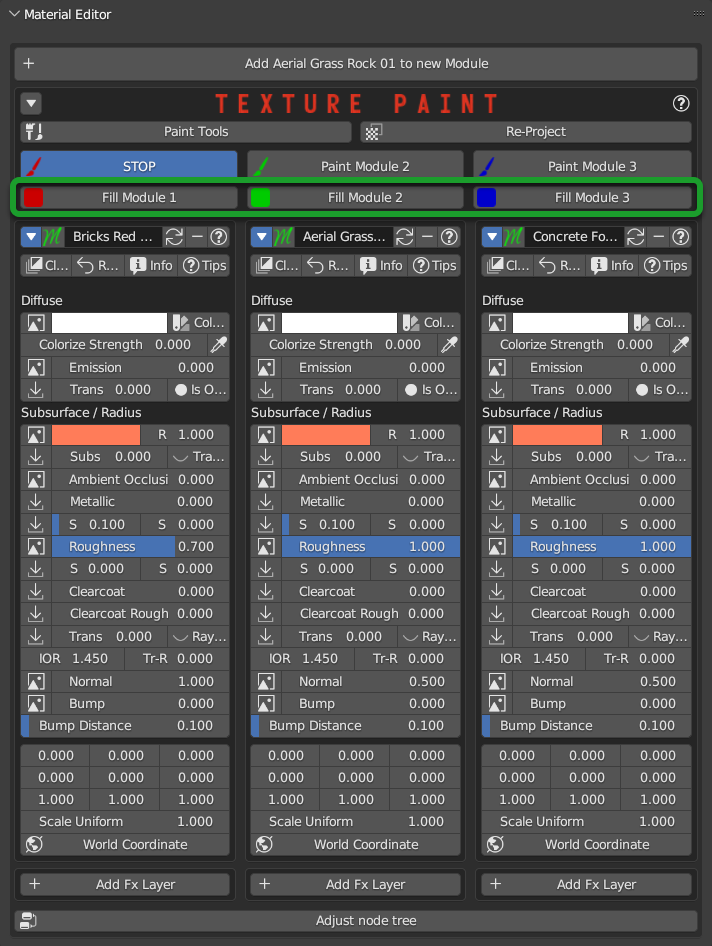

Texture Paint
Note
In order to access the painting you will have to be in Nexus mode Material Type and you will have to have added a material with the Add Module button
{kind=link}
This section is dedicated to texture paint and its tools.
Video Tutorial
Here a video tutorial of texture paint: Texture Paint
Introduction to Texture Paint
The texture paint is based on a system designed in 2020, this system is based on the painting of a mask, it decides based on the painted color (The color is not visible because it is a mask) which Module (Material) must be visible in the colored areas.
The painting is based on 4 colors: Red, Green, Blue and Black.
This combination, allows you to paint up to 4 material slots, but it is not to be confused with direct painting on an image. In fact, as mentioned previously, the painting is based on a mask, so it is the mask that is actually painted, and consequently the materials are displayed based on the mask.
Here an example of how the color that acts as a mask:
{kind=link}
{kind=link}
Add material to paint
In order to add a material to paint, it is necessary that the material on which you want to paint has been applied with Extreme PBR in Nexus mode, to do this check the preferences: Material Type
To add a material to paint, refer to this button Add Module
Texture Paint Editor
Here an example of how the texture paint looks like between 3 modules:
{kind=link}
Show Paint Editor
{kind=link}
The Show Paint Editor button allows you to hide or show the texture paint editor. Useful if you are working on the material and you want to keep a more compact interface.
{kind=link}
Re-Project
{kind=link}
Re-Project Button, allows you to re-project the texture of the painting, in order to fix it. The important use cases
The texture on the object has anomalies near the edges.
When you modify an object in its shape and geometry, the texture does not adapt to the new shape, so it is necessary re-project the texture.
Note
This button appears only when you are in Paint mode
{kind=link}
Fill Module
{kind=link}
These Buttons allow you to fill the material with the reference module. So if for example you have painted the model, with this button you will return to having a single material, based on which button of which module you have decided to do a Fill.